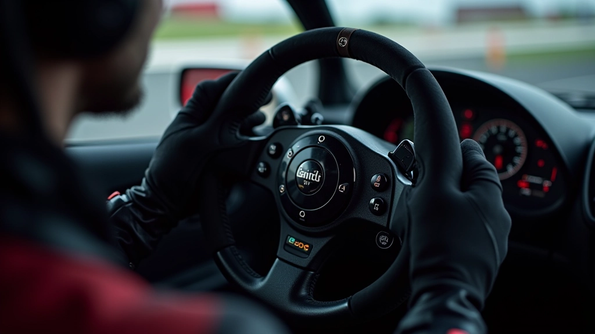
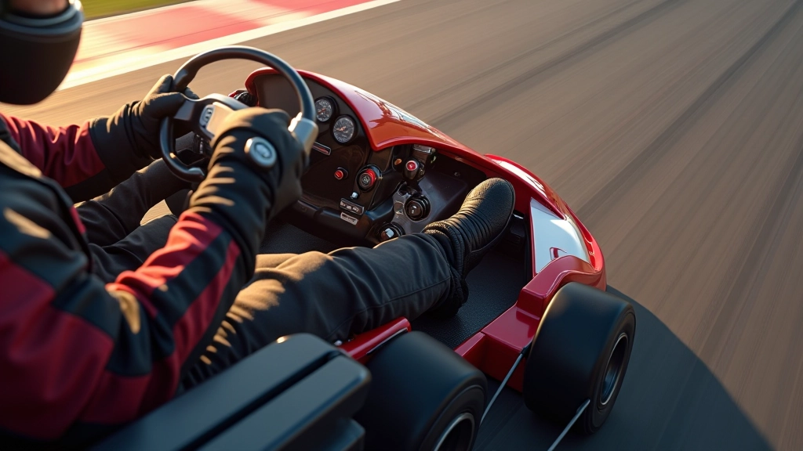
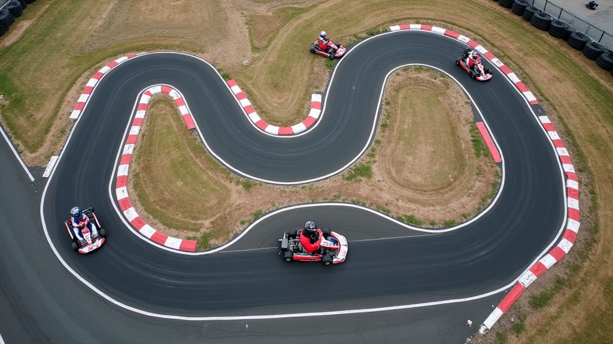
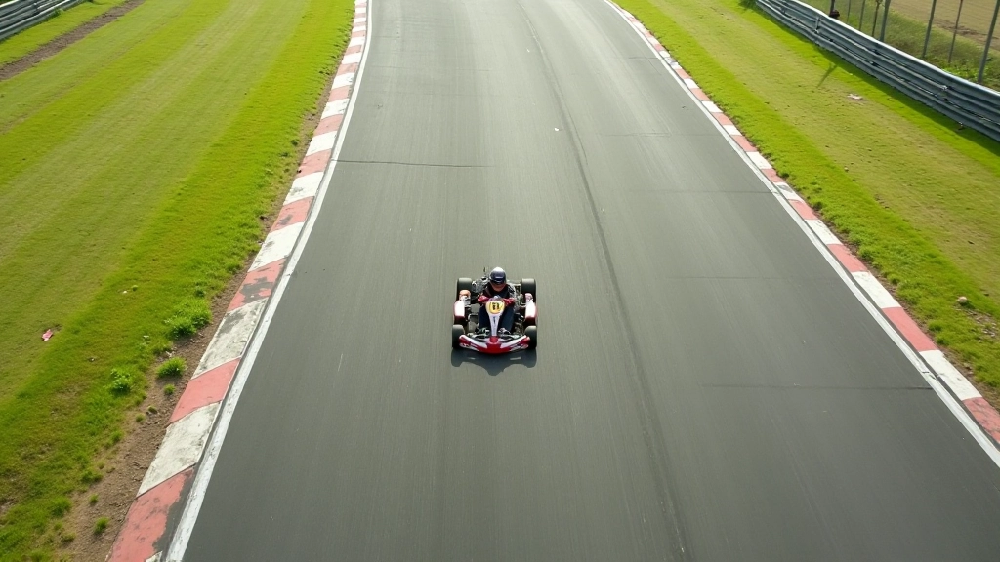
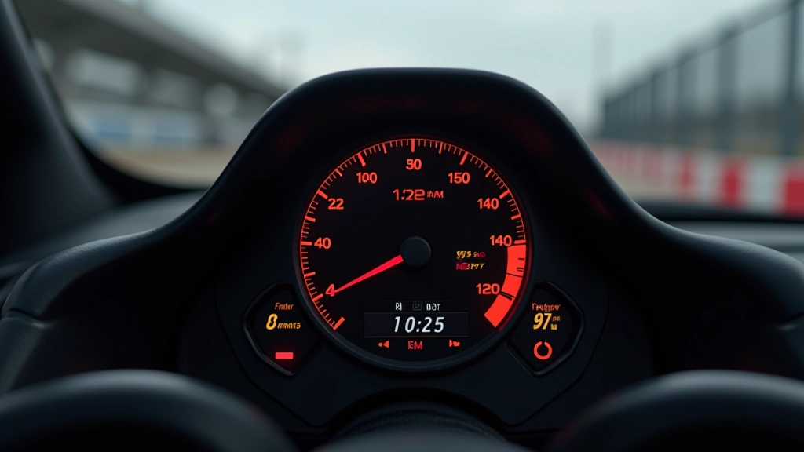

أساسيات التسريع من المنحنيات
تعرف على المبادئ الأساسية لكيفية الخروج السليم من المنحنيات وتطبيق الدواسة بشكل فعال لزيادة السرعة.
اكتشف كيف يعدل السائقون المحترفون ضغطهم على دواسة الوقود في مراحل مختلفة من المنحنى لتحقيق أقصى سرعة خروج.


كتبه
فريق التحرير والمراجعة
كتبه فريق تحرير ألفا درايفر، متخصص في تقديم إرشادات عملية وسهلة الفهم حول تقنيات الكارتينج.
السيطرة على دواسة الوقود — يبدو بسيطاً على السطح، لكنها تماماً ليست كذلك. الفرق بين السائق الذي يخرج من المنحنى بسرعة 45 كم/س والآخر الذي يحقق 65 كم/س يكمن في كيفية توزيعه لضغط القدم على الدواسة. ليس الأمر عن الضغط بقوة أكثر — بل عن الذكاء في التوقيت والتدرج.
نحن هنا نتحدث عن تقنية حقيقية يستخدمها السائقون المحترفون. وسنشرح كيفية تطبيقها بنفسك.
عندما تدخل منحنى، دواسة الوقود لا تبقى في موضع واحد. السائقون المحترفون يمرون بثلاث مراحل مختلفة تماماً:
المرحلة الأولى — الإفراج السريع: بمجرد ما تبدأ في الانعطاف، تُفرج عن الدواسة بسرعة. ليس بشكل كامل — حوالي 30-40% فقط. الهدف؟ تقليل قوة الجسم على العجلات حتى تتمكن من التحكم في الاتجاه بشكل أفضل.
المرحلة الثانية — الثبات المؤقت: في منتصف المنحنى تقريباً، تبقي على هذا الموضع. لا تضغط أكثر، لا تفرج أكثر. فقط اثبت. هذه لحظة حاسمة — تُحدد الآن ما إذا كنت ستخرج من المنحنى بثبات أم بانجراف.
المرحلة الثالثة — الإسراع التدريجي: هنا يبدأ السحر. أنت تبدأ بالضغط على الدواسة ببطء شديد — ليس دفعة واحدة. تدريجياً، بنعومة. بحلول الوقت الذي تصل فيه إلى خروج المنحنى، أنت تكون بالفعل عند 100% من الضغط.

قد تتساءل — إذاً لماذا لا نضغط على الدواسة بشكل كامل مباشرة عند خروج المنحنى؟
الجواب بسيط: الكارت سيفقد قبضته. تخيل أنك تقود سيارة على طريق رطبة. إذا ضغطت على البنزين فجأة، ستنزلق العجلات. الأمر ذاته يحدث في الكارتينج — حتى لو كانت المسار جاف تماماً.
عندما تضغط بسرعة على الدواسة، الإطارات الخلفية تحتاج وقتاً لاستعادة قبضتها على المسار. في هذه اللحظة القصيرة — ربما نصف ثانية فقط — أنت تفقد السيطرة. الكارت يميل إلى الانجراف للخارج. وبحلول الوقت الذي تستعيد فيه القبضة، فقدت بالفعل متراً أو مترين من الخروج الأمثل.
بالتدرج البطيء، أنت تعطي الإطارات وقتاً لاستعادة قبضتها تدريجياً. النتيجة؟ خروج سلس، سريع، وفي السيطرة تماماً.
السائقون الذين يخرجون من المنحنيات بسرعة ليسوا أقوى — هم أذكى. يعرفون بالضبط متى يفرجون، ومتى يثبتون، ومتى يسرعون. والفرق في السرعة قد يصل إلى 20 كم/س في نفس المنحنى.
الآن، كيف تتعلم هذا بنفسك؟ لا تتوقع أن تتقنها في جلسة واحدة. هذا يحتاج إلى ممارسة مركزة.
الأسبوع الأول: ركز على الإفراج عن الدواسة عند دخول المنحنى. لا تقلق بشأن الإسراع بعد. فقط تعلم كيف تُفرج بسلاسة. ستلاحظ أن الكارت يستجيب بشكل أفضل للتوجيه.
الأسبوع الثاني والثالث: أضف المرحلة الثانية — الثبات المؤقت في منتصف المنحنى. ستشعر بالفرق الآن. الكارت سيشعر بأنه أكثر استقراراً.
بعد شهر: ابدأ بالإسراع التدريجي. ببطء جداً في البداية. زد السرعة تدريجياً مع كل جولة. بعد عدة أسابيع، ستلاحظ أن خروجك من المنحنيات أصبح أسرع وأكثر سيطرة.

ليس عن الضغط بقوة على الدواسة — بل عن الضغط بالطريقة الصحيحة في الوقت الصحيح.
لا تنتقل من 30% إلى 100% فوراً. اجعلها سلسة. كل زيادة بطيئة وثابتة.
إذا سمعت صوت انزلاق الإطارات، فأنت تضغط بسرعة كبيرة. أبطئ التدرج.
كل منحنى فريد. منحنى ضيق يحتاج إفراج أكثر من منحنى واسع. تعلم القراءة.
كيف تعرف أنك تتحسن؟ بسيط — الوقت. إذا كنت تحقق لفة في 45 ثانية الآن، وبعد أسبوعين تحققها في 44.2 ثانية، فأنت تتحسن. وأغلب هذا التحسن يأتي من خروج أفضل من المنحنيات.
بعض الحلبات توفر نظام تتبع الأوقات. استخدمه. قارن لفاتك من الأسبوع الأول مع الآن. ستفاجأ بمدى التحسن.
هذا المحتوى يقدم إرشادات تعليمية عملية بناءً على تقنيات الكارتينج المعروفة. كل سائق مختلف، وكل كارت مختلف، وكل مسار مختلف. هذه النصائح هي نقطة انطلاق. تدرب بحذر، استمع إلى مدربيك إن وجدوا، وطور أسلوبك الخاص. النتائج تختلف باختلاف المهارة والخبرة والظروف.
التحكم الدقيق بدواسة الوقود ليس سحراً. إنها مهارة. وكل مهارة تُتعلم بالممارسة والصبر والانتباه للتفاصيل.
ابدأ اليوم. اختر منحنى واحداً. ركز على الإفراج السلس. لا تقلق بشأن السرعة — السرعة ستأتي من تلقاء نفسها. في غضون أسابيع قليلة، ستلاحظ الفرق. وسيلاحظه المنافسون أيضاً.
واصل تعلمك حول تقنيات الكارتينج والأداء
تعرف على المبادئ الأساسية لكيفية الخروج السليم من المنحنيات وتطبيق الدواسة بشكل فعال لزيادة السرعة.

تعلم كيفية اختيار أفضل خط سباق عند الاقتراب من المنحنى وكيفية تعديل موضعك لتحقيق أداء أفضل.

استخدم البيانات والتحليلات لقياس تقدمك وتحديد نقاط الضعف في تقنيتك عند الخروج من المنحنيات.